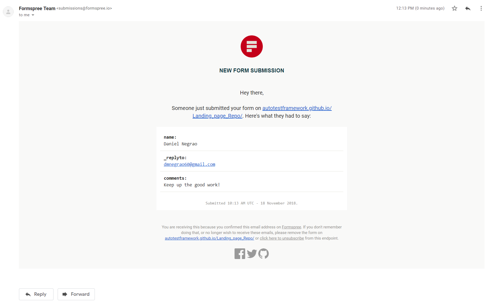
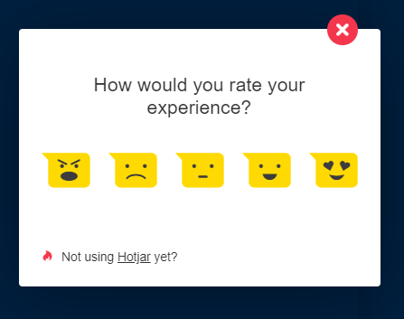
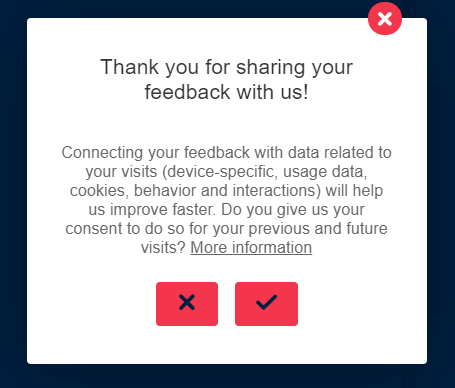
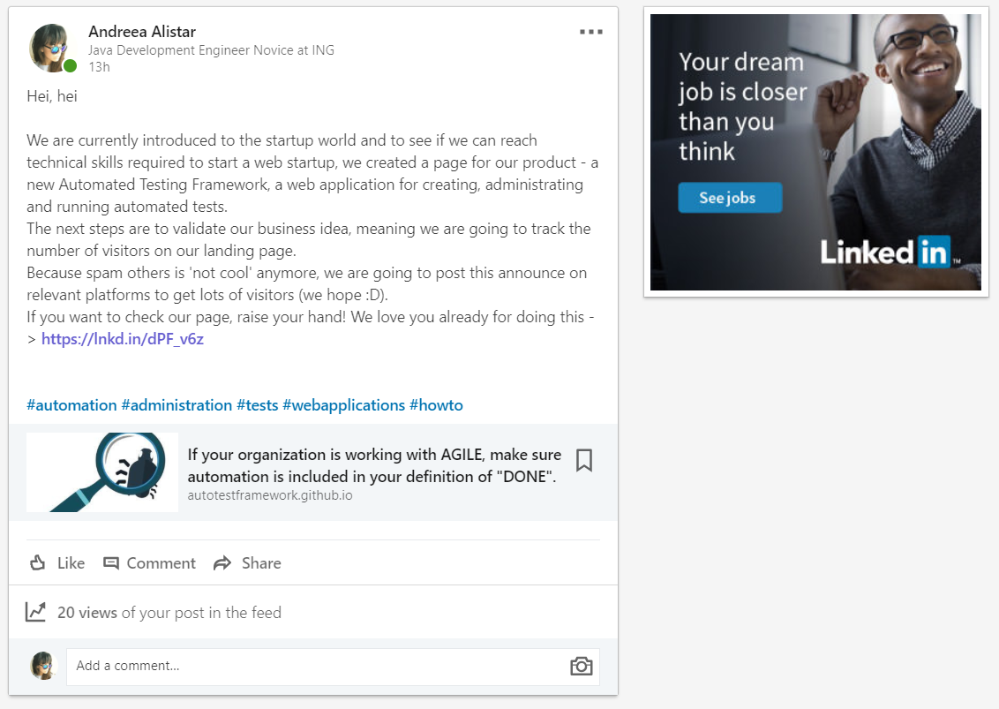
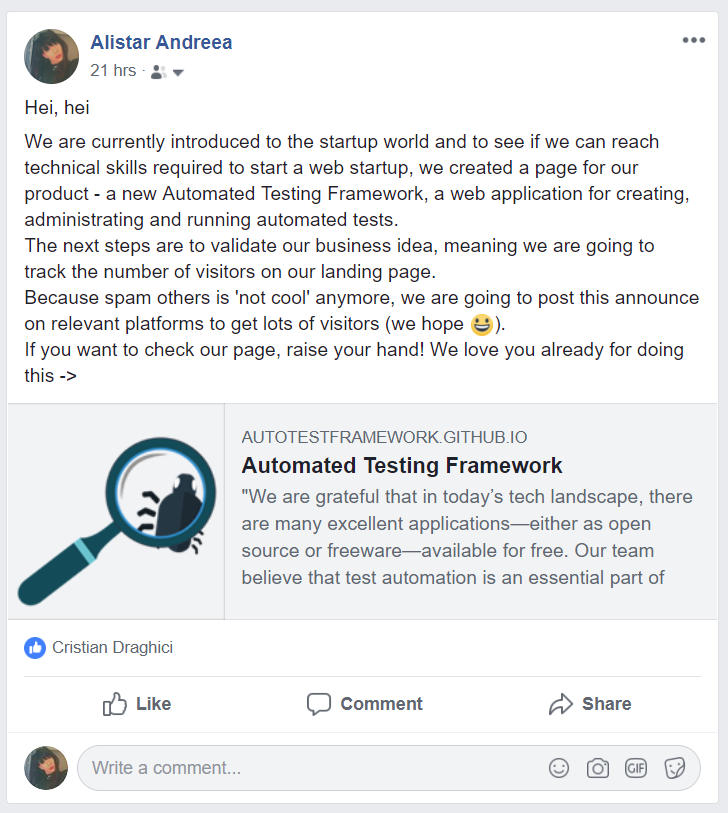
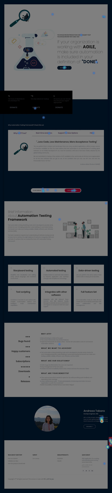
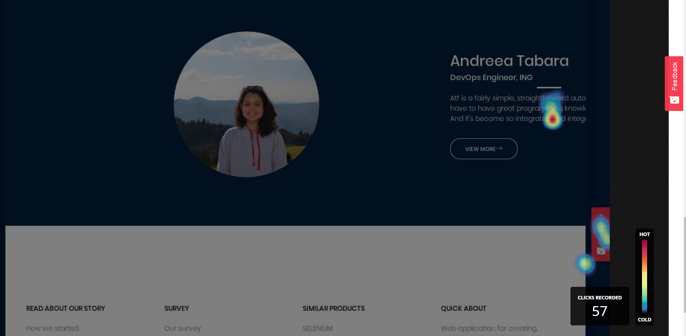
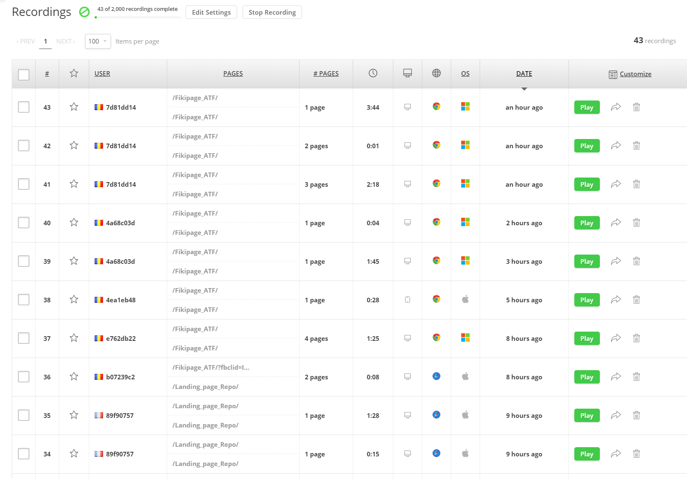
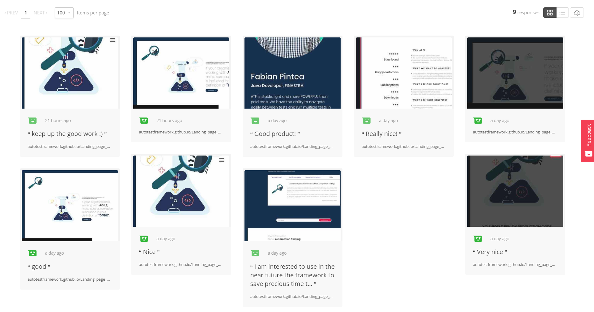

M5 - Validation 2: Lead Generation and Collection
1. Add a lead collection section to your landing page
To get in touch with potential customers, we used Formspree to make the subscribtion option:
The subscription is available on ATF Landing Page
We collected 19 subscribers and we plan to achieve more:

To collect feedback from users, we used Hotjar, which allowed us to create a feedback form:
 
We created the feedback form in order to be able to respons to customer's needs:
How did you find our site?
If you could change anything on this page, what would you have us do?
Is there anything on this page that doesn't work the way you expected it to?
Were you able to find the information you were looking for?
What other information would you like to see on this page?
What could we do to make this site more useful?
2. Add analytics on your landing page
We added Google Analytics for tracking the number of visitors:
<!-- Global site tag (gtag.js) - Google Analytics -->
<script async src="https://www.googletagmanager.com/gtag/js?id=UA-129175432-1"></script>
<script>
window.dataLayer = window.dataLayer || [];
function gtag() {
dataLayer.push(arguments);
}
gtag('js', new Date());
gtag('config', 'UA-129175432-1');
</script>
We used Hotjar to analyse click-maps and user recordings:
<!-- Hotjar Tracking Code for https://autotestframework.github.io/Landing_page_R -->
<script>
(function(h, o, t, j, a, r) {
h.hj = h.hj || function() {
(h.hj.q = h.hj.q || []).push(arguments)
};
h._hjSettings = {
hjid: 1089685,
hjsv: 6
};
a = o.getElementsByTagName('head')[0];
r = o.createElement('script');
r.async = 1;
r.src = t + h._hjSettings.hjid + j + h._hjSettings.hjsv;
a.appendChild(r);
})(window, document, 'https://static.hotjar.com/c/hotjar-', '.js?sv=');
</script>
3. Bring people on your landing page
To reach out a relevant number of visitors, we posted on social platforms as Facebook & Linkedin:
Linkedin: https://www.linkedin.com/feed/update/urn:li:activity:6469451135097798656

Facebook: https://www.facebook.com/alistar.andreea/posts/950599518466593

4. Document the entire lead generating campaign on your Fiki
Using Hotjar we analysed the click-maps and user recordings:

We can conclude that the main sections most liked by users are: the customers feedback, the section where we summarized why you should use our product and the subscription option!

We had a total of 57 clicks recorded, where the most liked section was: the customers feedback.




Hotjar versus Google Analytics: People lie, data doesn't.
Hotjar
Using only one platform (Hotjar), we created the feedback form & we simulated the user behavior in order to improve the user experience - Google Analytics doesn't provide a feedback form
Thee platform showed us how our visitors are really using the pages themselves. This allowed us to quickly identify opportunities for improvement and growth.
Google Analytics
Google Analytics was used only to give data about the pages (which page has the highest bounce rate or conversion rate).
Combining both platforms, we used Google Analytics to report why our homepage has a very high bounce rate. Hotjar was used to show us why that is happening, using Heatmaps, recordings and polls. This allowed us to make the changes needed to decrease bounce rate.
Google Analytics and HotJar: the winning combination
We posted our landing page on relevant social networks (Facebook - the place where most people spend their time and Linkedin - the most accessible self-promotion platform for people with various interests and objectives) to reach a decent number of visitors;
We find out when the user clicks + stays + navigates (HotJar) and converts (Google Analytics)
Facebook versus Linkedin
Out of the two social networks we've promoted our product on, the one that returned the best results was Facebook because it is the path to our closest friends and most relevant potential customers. Meanwhile, Linkedin offered less satisfactory results because our connections there are mostly interested in jobs or potential employees, and not in software products.